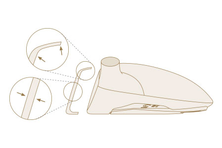

XXIO PRIME FAIRWAY
The all-new XXIO Prime Fairway Woods produce a straight ball flight and enhanced distance due to their lightweight construction and feel.
TECHNOLOGY
Super-Tix PLUS Forged Titanium Cup Face
The new Titanium Cup Face is forged from Super-Tix PLUS Titanium, a lightweight but high-strength alloy, which greatly increases distance performance thanks to a larger, hotter sweet spot.

Unprecedented Lightweight Construction
The new XXIO Prime SP-1000 Shaft, with TORAYCA T1100G carbon fiber and NANOALLOY resin, is extremely lightweight to help produce more ball speed and distance due to its smooth, easy-to-swing profile.
Groundbreaking Forgiveness
With an expanded toe and narrowed heel, a tungsten-nickel inner weight, a lighter hosel repositioned closer to the center of the face, and reduced stiffness at the tip of the shaft, this is our most forgiving suite of Prime Woods to date.
XXIO PRIME FAIRWAY Specs

XXIO PRIME FAIRWAY PRICE
€ / CHF / SEK / £